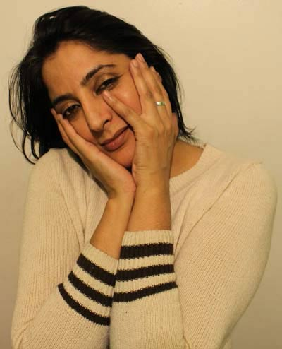
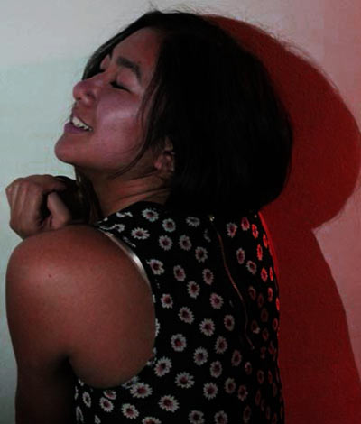
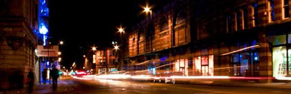
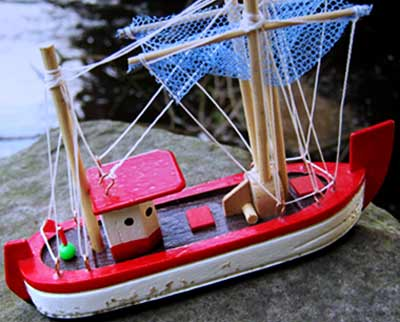
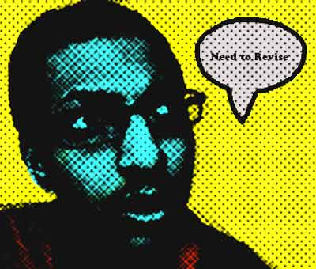

Kamaal Khanum-Williams
25th Jan 2014
For this task I had to take pictures that represent a day in my life these images that I have taken show this for example the portrait artistic this image represents a day in my life. This image is of someone that I see everyday. The camera I used to produce my images was a canon D-SLR I took all my images with this except for pop art image which was done with my Macbook.
The images
Portrait (standard)

This is the portrait image that I had taken of my mother which I took after I got home from university this image I decided to take as my standard portrait because I think that my mum at 45 years old has a photogenic face. I see my mother every day, I wanted to capture a moment in my life that I share with her on a daily basis because we are always talking about everything, and the photo I thought captures the passion look she is giving through her hands. This image I used a canon D-SLR (Digital SLR) with the Manual setting also with a shutter speed of 1/25 to capture the perfect moment without any blurs in the image. The image I used continuous capture so that as my mother posed and was comfortable to express herself the image would come out more relaxed. I took this shot with a great amount of artificial lighting to bring out the features in my mother’s face and hands. The image is taken from a more central view so that it feels as if she is looking directly at you from any angle that you see the image. In Photoshop I tried to keep the image editing of this standard image to a minimum by only changing the, “Brightness/Contrast” which slightly brought out the facial expression.
Portrait (artistic)

The Portrait image I took of my partner who I see every evening after university on this particular day we chose to go to my house for a meal and I saw the perfect opportunity to capture this portrait image even though it isn’t the typical type portrait I found that using two different types of lighting and colours was best to bring out the exposer on her face while using the manual camera setting. The Hue/Saturation that I used was to bring out the red, which highlights the shadow coming off her back and body. I used the same settings as the standard portrait except I used the normal one capture instead of the continuous capture, as I needed her to stay in that position. The reason that I took this image of my partner was that she is a special person in my life we spend most of our days together taking many pictures about our journeys in life. The way I took the image was using the lighting in my house as well as a spotlight on the left hand side of the image to create a contrast of colours with her as the division between both colours.
Landscape

On the way home going through the town centre to my bus stop I thought I would capture the busy life of Manchester an the speed of the cars that go by. Using the tripod that I had I was able to capture the cars driving past by using the slow shutter speed so that the lights of the cars will look as they are a stream of light and gives the illusion, there not being any cars just a stream of white and red lights from the cars passing by. This image I took with the slow capture because it creates a sense of busy atmosphere that Manchester has especially at night. I also made the image lighter than the original image by increasing the brightness. The editing I kept to a minimum because the landscape image has enough going on in the image and I didn’t want to overdo the image. The reason this image relates to my life is because, I travel through the city centre every day on my way home.
Object

The object that I used was of a boat my father got for me from Netherlands last year I thought that this was a great object to use to represent a day in my life this is an object that I often look at this item in my mornings. This image I captured using my D-SLR I used the natural surroundings I found at my local park I couldn’t sit the boat as planned on the river as it almost sank. I found this rock perfect to use as a pivot to capture the boat and part of the river stream behind it. The process I took in Photoshop to get the image to this stage was by first changing the colour balance to give the image a slight blue highlight to it to bring out the reflection of the clouds on the river. Next I created a new layer flowing the first copied layer I used this layer to change the general blending option to ‘overlay’ which had opacity of 50%. The final edit I made with this image was the gradient overlay the blend mode I changed on this image was ‘subtract ‘which also had its opacity changed to 35% so that it didn’t over power the image. This image is important to me, as I like to reflect on things, which are taking place in my life when I was looking at my object it led me to think about the progress im making at university and were I can improve in my studies. The reason for taking this picture as it often allows me to become at peace with any struggles in my life.
Pop Art

The pop art I made for this image was of myself I took this image on my MacBook , the reason I took this image was because I thought I could show me thinking while taking the image. The reason I took the image on my MacBook was because it is something that I use a lot in my own time but I had a problem with my own camera which led me to using this.
Return to top | Home